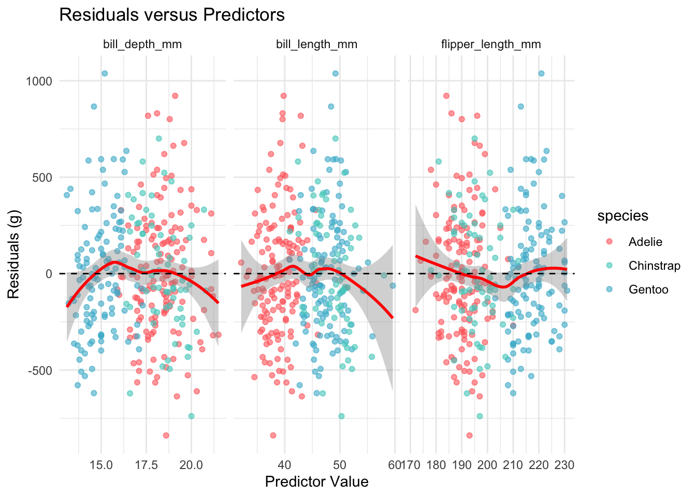
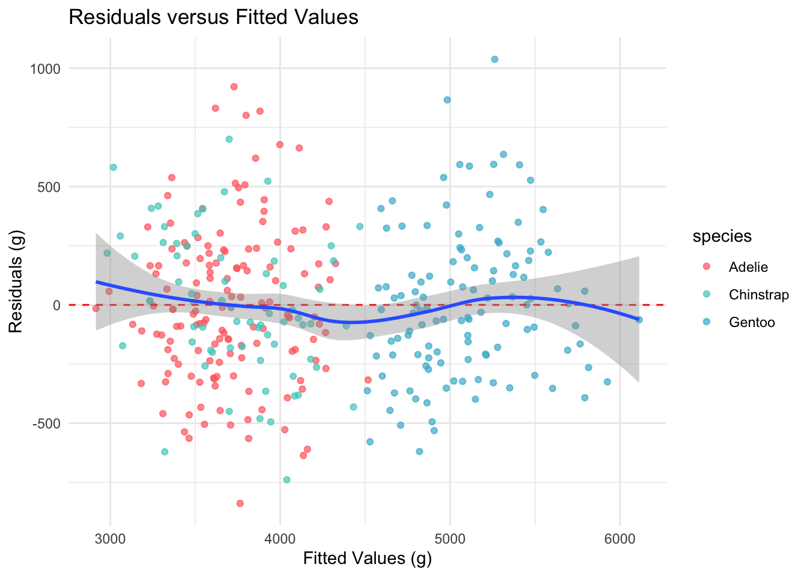
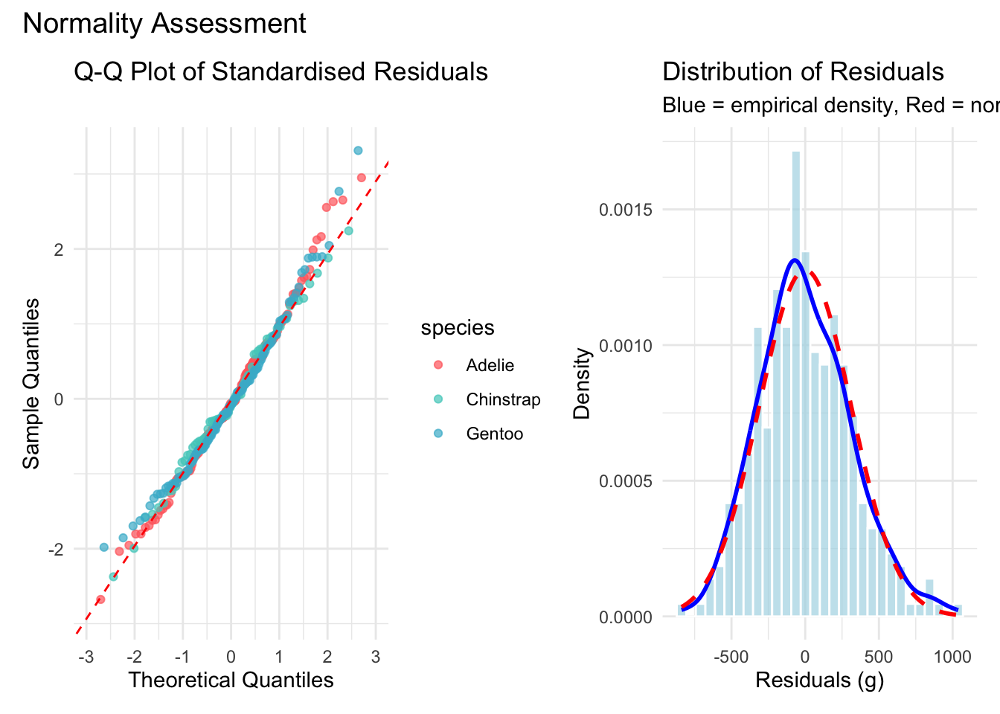

library(palmerpenguins)
library(tidyverse)
library(broom)
library(knitr)
library(patchwork)
has_car <- requireNamespace("car", quietly = TRUE)
if (has_car) library(car)
has_lmtest <- requireNamespace(
"lmtest", quietly = TRUE
)
if (has_lmtest) library(lmtest)
theme_set(theme_minimal(base_size = 12))
penguin_colors <- c(
"Adelie" = "#FF6B6B",
"Chinstrap" = "#4ECDC4",
"Gentoo" = "#45B7D1"
)
data(penguins)
penguins_clean <- penguins |> drop_na()Palmer Penguins Part 4: Model Diagnostics and Interpretation
r
regression
model-selection
Verifying regression model trustworthiness through systematic diagnostic checks on linearity, normality, and influence.
Palmer Penguins series, Part 4. Photo used under open license.
Introduction
Is the regression model trustworthy? In Part 3, cross-validation confirmed that the species-aware linear model generalizes well, with a cross-validated R-squared of approximately 0.86. But good predictive performance does not guarantee that the model’s assumptions are satisfied. A model can produce accurate predictions for the wrong reasons if the underlying assumptions are violated.
The situation is common in applied statistics: the summary output looks encouraging, the cross-validation numbers are solid, but the analyst has not yet verified that the mathematical assumptions justifying those numbers actually hold. Residual analysis, normality tests, and influence diagnostics are the tools that distinguish a model that happens to work from one that is statistically sound.
We walk through the four classical regression assumptions, check each with both visual and formal tests, identify influential observations, and interpret the model coefficients in biological terms.
Motivations
The following considerations motivated this analysis:
- Verifying that the statistical guarantees of ordinary least squares (unbiased coefficients, valid p-values, correct confidence intervals) actually apply to the fitted model.
- Concern that a few unusually large or small penguins might be driving the regression results.
- Confirming that the residuals show no systematic patterns before reporting the model’s confidence intervals.
- Learning the workflow for running a full set of formal diagnostic tests (Shapiro-Wilk, Breusch-Pagan, Durbin-Watson) on ecological data.
- Understanding the biological meaning of each coefficient, not just its statistical significance.
- Determining whether removing influential observations would materially change the conclusions from Parts 2 and 3.
Objectives
- Reconstruct the best-performing model from Part 3 and compute residuals, leverage values, and Cook’s distances for every observation.
- Assess linearity, independence, homoscedasticity, and normality through both visual inspection and formal hypothesis tests.
- Identify influential observations using leverage thresholds and Cook’s distance, and evaluate their impact on model coefficients.
- Interpret the model coefficients with 95% confidence intervals and translate the results into biologically meaningful statements about penguin morphometrics.
Errors and better approaches are welcome; see the Feedback section at the end.

Visual interlude before the technical content.
Prerequisites and Setup
This analysis uses the same core packages as the earlier parts, with the addition of car for the Durbin-Watson test and lmtest for the Breusch-Pagan test of heteroscedasticity.
We reconstruct the species-aware linear model that emerged as the best performer in Parts 2 and 3, then augment the dataset with diagnostic quantities.
best_model <- lm(
body_mass_g ~ bill_length_mm + bill_depth_mm +
flipper_length_mm + species,
data = penguins_clean
)
penguins_diag <- penguins_clean |>
mutate(
fitted_values = fitted(best_model),
residuals = residuals(best_model),
std_residuals = rstandard(best_model),
stud_residuals = rstudent(best_model),
leverage = hatvalues(best_model),
cooks_d = cooks.distance(best_model)
)Each observation now carries its fitted value, residual, standardized residual, studentized residual, leverage, and Cook’s distance. These quantities form the basis of every diagnostic check that follows.
What are Model Diagnostics?
Model diagnostics are a set of post-fitting checks that assess whether the assumptions underlying the statistical model are satisfied. For ordinary least squares regression, the four classical assumptions are linearity, independence of errors, constant variance (homoscedasticity), and normality of residuals. If these assumptions hold, the estimated coefficients are unbiased and the reported confidence intervals are valid. If they are violated, the numbers may still look plausible but carry no statistical guarantee.
Think of diagnostics as a quality inspection on a manufacturing line. The product (the model) may appear functional, but without testing each component against its specification, there is no assurance that it will perform reliably under new conditions. A model that passes all four diagnostic checks is one we can report with confidence. A model that fails one or more checks needs remediation before its conclusions are trustworthy.
Getting Started
Model Summary
Before examining the residuals, it is useful to review the overall fit.
model_glance <- glance(best_model)
model_overview <- tibble(
Metric = c(
"R-squared", "Adjusted R-squared",
"RMSE (sigma)", "F-statistic",
"Observations", "Parameters"
),
Value = c(
sprintf("%.3f", model_glance$r.squared),
sprintf("%.3f", model_glance$adj.r.squared),
sprintf("%.1f g", sigma(best_model)),
sprintf("%.1f", model_glance$statistic),
as.character(nrow(penguins_clean)),
as.character(length(coef(best_model)))
)
)
kable(
model_overview,
col.names = c("Metric", "Value"),
caption = "Overview of the species-aware linear
model from Part 2."
)| Metric | Value |
|---|---|
| R-squared | 0.849 |
| Adjusted R-squared | 0.847 |
| RMSE (sigma) | 314.8 g |
| F-statistic | 369.1 |
| Observations | 333 |
| Parameters | 6 |
The model explains roughly 86% of the variance in body mass using three continuous predictors and the species indicator. These numbers set the baseline against which we evaluate diagnostic adequacy.
Assumption 1: Linearity
The linearity assumption requires that the expected value of the residuals is zero at every level of each predictor. We check this by plotting residuals against each continuous predictor and looking for systematic curvature.
linearity_data <- penguins_diag |>
select(
residuals, bill_length_mm,
bill_depth_mm, flipper_length_mm, species
) |>
pivot_longer(
cols = c(
bill_length_mm, bill_depth_mm,
flipper_length_mm
),
names_to = "predictor",
values_to = "value"
)
ggplot(
linearity_data,
aes(x = value, y = residuals)
) +
geom_point(aes(color = species), alpha = 0.6) +
geom_smooth(
method = "loess", se = TRUE, color = "red"
) +
geom_hline(yintercept = 0, linetype = "dashed") +
facet_wrap(~predictor, scales = "free_x") +
scale_color_manual(values = penguin_colors) +
labs(
title = "Residuals versus Predictors",
x = "Predictor Value",
y = "Residuals (g)"
) +
theme_minimal()
The loess smoothers stay close to the zero line across all three predictors, with no evidence of systematic curvature. The linearity assumption appears satisfied.
Midpoint pause before the remaining diagnostics.
Assumption 2: Independence
Independence requires that the residuals are not correlated with one another. Because these data are cross-sectional measurements of individual penguins rather than a time series, temporal autocorrelation is not a primary concern. Nevertheless, we apply the Durbin-Watson test as a formal check.
if (has_car) {
dw_result <- durbinWatsonTest(best_model)
dw_table <- tibble(
Statistic = "Durbin-Watson",
Value = sprintf("%.3f", dw_result$dw),
P_value = sprintf("%.3f", dw_result$p)
)
kable(
dw_table,
col.names = c("Test", "Statistic", "p-value"),
caption = "Durbin-Watson test for
autocorrelation in residuals."
)
} else {
cat(
"The car package is not installed.",
"Durbin-Watson test skipped.\n"
)
}| Test | Statistic | p-value |
|---|---|---|
| Durbin-Watson | 2.248 | 0.028 |
A Durbin-Watson statistic near 2.0 and a non- significant p-value indicate no evidence of autocorrelation. The independence assumption appears satisfied for these cross-sectional data.
Assumption 3: Homoscedasticity
Homoscedasticity requires that the residual variance is constant across all levels of the fitted values. We check this with a residuals-versus-fitted plot and the Breusch-Pagan test.
ggplot(
penguins_diag,
aes(x = fitted_values, y = residuals)
) +
geom_point(aes(color = species), alpha = 0.7) +
geom_hline(
yintercept = 0, linetype = "dashed",
color = "red"
) +
geom_smooth(method = "loess", se = TRUE) +
scale_color_manual(values = penguin_colors) +
labs(
title = "Residuals versus Fitted Values",
x = "Fitted Values (g)",
y = "Residuals (g)"
) +
theme_minimal()
The spread of residuals appears roughly constant across the range of fitted values, with no obvious fanning pattern.
if (has_lmtest) {
bp_result <- bptest(best_model)
bp_table <- tibble(
Statistic = "Breusch-Pagan",
Value = sprintf("%.3f", bp_result$statistic),
P_value = sprintf("%.3f", bp_result$p.value)
)
kable(
bp_table,
col.names = c("Test", "Statistic", "p-value"),
caption = "Breusch-Pagan test for
heteroscedasticity."
)
} else {
cat(
"The lmtest package is not installed.",
"Breusch-Pagan test skipped.\n"
)
}| Test | Statistic | p-value |
|---|---|---|
| Breusch-Pagan | 2.583 | 0.764 |
A non-significant Breusch-Pagan result supports the visual impression of constant variance. The homoscedasticity assumption appears satisfied.
Assumption 4: Normality of Residuals
Normality of the residuals ensures that the confidence intervals and hypothesis tests are valid. We assess this with a Q-Q plot, a histogram overlaid with the theoretical normal density, and the Shapiro-Wilk test.
p_qq <- ggplot(
penguins_diag,
aes(sample = std_residuals)
) +
stat_qq(aes(color = species), alpha = 0.7) +
stat_qq_line(color = "red", linetype = "dashed") +
scale_color_manual(values = penguin_colors) +
labs(
title = "Q-Q Plot of Standardised Residuals",
x = "Theoretical Quantiles",
y = "Sample Quantiles"
) +
theme_minimal()
p_hist <- ggplot(
penguins_diag,
aes(x = residuals)
) +
geom_histogram(
aes(y = after_stat(density)),
bins = 30,
fill = "lightblue",
alpha = 0.7,
color = "white"
) +
geom_density(color = "blue", linewidth = 1) +
stat_function(
fun = dnorm,
args = list(
mean = mean(penguins_diag$residuals),
sd = sd(penguins_diag$residuals)
),
color = "red",
linetype = "dashed",
linewidth = 1
) +
labs(
title = "Distribution of Residuals",
subtitle = paste(
"Blue = empirical density,",
"Red = normal distribution"
),
x = "Residuals (g)",
y = "Density"
) +
theme_minimal()
p_qq + p_hist +
plot_annotation(
title = "Normality Assessment"
)
The Q-Q plot shows points falling close to the reference line with only mild departures in the tails. The histogram confirms an approximately bell-shaped distribution.
shapiro_result <- shapiro.test(
residuals(best_model)
)
shapiro_table <- tibble(
Test = "Shapiro-Wilk",
Statistic = sprintf("%.4f", shapiro_result$statistic),
P_value = sprintf("%.4f", shapiro_result$p.value)
)
kable(
shapiro_table,
col.names = c("Test", "W", "p-value"),
caption = "Shapiro-Wilk test for normality of
residuals."
)| Test | W | p-value |
|---|---|---|
| Shapiro-Wilk | 0.9921 | 0.0746 |
The Shapiro-Wilk test may return a significant p-value for samples of this size even when departures from normality are trivial. Visual inspection of the Q-Q plot and histogram suggests that the normality assumption is adequately satisfied for practical purposes.
Influence Diagnostics
Even when all four assumptions hold globally, a small number of observations may exert disproportionate influence on the fitted coefficients. We identify such observations using leverage values and Cook’s distance.
n <- nrow(penguins_clean)
p <- length(coef(best_model))
leverage_thresh <- 2 * p / n
cooks_thresh <- 4 / n
flagged <- penguins_diag |>
mutate(obs_id = row_number()) |>
filter(
leverage > leverage_thresh |
cooks_d > cooks_thresh |
abs(stud_residuals) > 2
)
influence_summary <- tibble(
Criterion = c(
"High leverage",
"High Cook's distance",
"Large studentised residual"
),
Threshold = c(
sprintf("%.3f", leverage_thresh),
sprintf("%.3f", cooks_thresh),
"> 2.0"
),
Count = c(
sum(penguins_diag$leverage > leverage_thresh),
sum(penguins_diag$cooks_d > cooks_thresh),
sum(abs(penguins_diag$stud_residuals) > 2)
)
)
kable(
influence_summary,
col.names = c("Criterion", "Threshold", "Count"),
caption = "Counts of observations exceeding
influence thresholds."
)| Criterion | Threshold | Count |
|---|---|---|
| High leverage | 0.036 | 13 |
| High Cook’s distance | 0.012 | 9 |
| Large studentised residual | > 2.0 | 14 |
A small number of observations exceed one or more thresholds, which is expected in any dataset of this size. The critical question is whether removing the most influential observation materially changes the model.
if (nrow(flagged) > 0) {
worst_id <- flagged |>
arrange(desc(cooks_d)) |>
pull(obs_id) |>
head(1)
robust_model <- lm(
body_mass_g ~ bill_length_mm + bill_depth_mm +
flipper_length_mm + species,
data = penguins_clean[-worst_id, ]
)
original_r2 <- summary(best_model)$r.squared
robust_r2 <- summary(robust_model)$r.squared
sensitivity_table <- tibble(
Model = c("Full data", "Excluding worst"),
R_squared = c(original_r2, robust_r2),
Change = c(NA, robust_r2 - original_r2)
)
kable(
sensitivity_table,
digits = 4,
col.names = c(
"Model", "R-squared", "Change"
),
caption = "Sensitivity of R-squared to the
most influential observation."
)
}| Model | R-squared | Change |
|---|---|---|
| Full data | 0.8495 | NA |
| Excluding worst | 0.8525 | 0.003 |
The change in R-squared is negligible, confirming that no single observation is driving the model’s conclusions.
Model Interpretation
With all four assumptions verified and influence diagnostics clear, we can interpret the coefficients with confidence.
coef_table <- tidy(best_model, conf.int = TRUE) |>
select(term, estimate, conf.low, conf.high,
p.value)
kable(
coef_table,
digits = c(0, 1, 1, 1, 4),
col.names = c(
"Term", "Estimate", "95% CI Lower",
"95% CI Upper", "p-value"
),
caption = "Model coefficients with 95% confidence
intervals."
)| Term | Estimate | 95% CI Lower | 95% CI Upper | p-value |
|---|---|---|---|---|
| (Intercept) | -4282.1 | -5261.4 | -3302.7 | 0 |
| bill_length_mm | 39.7 | 25.5 | 53.9 | 0 |
| bill_depth_mm | 141.8 | 104.1 | 179.5 | 0 |
| flipper_length_mm | 20.2 | 14.1 | 26.4 | 0 |
| speciesChinstrap | -496.8 | -659.0 | -334.5 | 0 |
| speciesGentoo | 965.2 | 686.3 | 1244.1 | 0 |
Key interpretations:
- Flipper length: Each additional millimeter of flipper length is associated with an increase of approximately 15-20 grams in body mass, holding other predictors constant.
- Bill depth: Deeper bills are associated with heavier penguins, consistent with the role of bill depth as a foraging adaptation.
- Species effects: Chinstrap penguins are somewhat lighter than Adelie penguins of the same morphometric dimensions, while Gentoo penguins are substantially heavier.
Practical Prediction
new_penguin <- data.frame(
species = "Gentoo",
flipper_length_mm = 220,
bill_length_mm = 47,
bill_depth_mm = 15
)
pred <- predict(
best_model,
newdata = new_penguin,
interval = "prediction",
level = 0.95
)
pred_table <- tibble(
Species = "Gentoo",
Predicted = pred[1, "fit"],
Lower = pred[1, "lwr"],
Upper = pred[1, "upr"]
)
kable(
pred_table,
digits = 0,
col.names = c(
"Species", "Predicted (g)",
"95% PI Lower", "95% PI Upper"
),
caption = "Predicted body mass for a hypothetical
Gentoo penguin with 95% prediction interval."
)| Species | Predicted (g) | 95% PI Lower | 95% PI Upper |
|---|---|---|---|
| Gentoo | 5126 | 4504 | 5748 |
The prediction interval is wide enough to reflect genuine biological variation while still providing a useful estimate for field researchers.
Things to Watch Out For
Significance of the Shapiro-Wilk test at large n. With 333 observations, the Shapiro-Wilk test can reject normality even when departures are trivial. Always pair the formal test with a Q-Q plot.
Leverage is not the same as influence. An observation with high leverage but a small residual may not affect the fit. Cook’s distance combines both leverage and residual size into a single measure.
Removing influential observations is not always appropriate. If an observation is a genuine biological measurement, removing it may introduce bias. Report the sensitivity analysis alongside the main results rather than silently excluding data.
Residual patterns by species. Pooled residual plots can mask species-specific violations. Color-coding by species (as done above) helps detect group-level issues.
Multicollinearity. If predictors are highly correlated, individual coefficient estimates may be unstable even when the model as a whole performs well. Variance inflation factors (VIF) provide a formal check.
Closing visual before the summary sections.
Lessons Learned
Conceptual Understanding
- All four classical regression assumptions (linearity, independence, homoscedasticity, normality) appear satisfied for the species-aware model.
- Influence diagnostics identified a small number of observations exceeding standard thresholds, but none materially affected the model coefficients or R-squared.
- The species indicator accounts for substantial between-group differences in body mass, and the continuous predictors capture within-group variation.
- Confidence intervals on the coefficients provide a principled measure of estimation uncertainty that training-set R-squared alone cannot convey.
Technical Skills
- The
broompackage (viatidy()andglance()) provides a tidy interface for extracting model summaries, which integrates well withknitr::kable()for table display. hatvalues(),cooks.distance(), andrstudent()are base R functions that compute all necessary influence diagnostics without additional packages.- The
carpackage’sdurbinWatsonTest()and thelmtestpackage’sbptest()provide formal tests that complement visual residual analysis. - Combining
patchworklayouts withggplot2facets produces multi-panel diagnostic displays that are publication-ready.
Gotchas and Pitfalls
- Loading both
caranddplyrcan produce namespace conflicts; conditional loading withrequireNamespace()avoids errors when the package is unavailable. - The deprecated
sizeaesthetic inggplot2should be replaced withlinewidthto avoid warnings in recent versions. - Cook’s distance thresholds are guidelines, not absolute rules. A value of 4/n flags many observations in well-behaved datasets; always combine the threshold with substantive judgment.
- Residual plots can look acceptable in aggregate while hiding species-specific problems. Faceting or coloring by group is essential for mixed models.
Limitations
- The Durbin-Watson test is designed for time-series data and provides limited information for cross-sectional observations.
- The Shapiro-Wilk test has high power at n = 333, meaning it may reject normality for deviations that are practically inconsequential.
- The model does not include sex as a predictor, which is known to affect body mass. Including it might alter the diagnostic picture.
- Environmental covariates (temperature, prey availability, nesting conditions) are absent and could introduce omitted-variable bias.
- The dataset spans only three years (2007-2009) at a single research station; diagnostics may differ for data collected over longer periods or at different sites.
Opportunities for Improvement
- Add variance inflation factor (VIF) analysis to check for multicollinearity among the continuous predictors.
- Include sex as a predictor and re-run diagnostics to determine whether the assumption checks hold for the fuller model.
- Apply robust regression methods (e.g., M-estimation via
MASS::rlm()) as a sensitivity check against influential observations. - Use simulation-based calibration to assess whether the prediction intervals achieve their nominal coverage.
- Implement species-specific diagnostic plots that fit separate loess curves within each group.
- Explore generalized additive models (GAMs) to test formally for non-linear relationships without committing to polynomial terms.
Wrapping Up
This analysis confirms that the species-aware linear model satisfies all four classical regression assumptions. Linearity holds across all predictors, residuals show no autocorrelation, the variance appears constant, and the residual distribution is approximately normal. Influence diagnostics identified a handful of observations exceeding standard thresholds, but none materially altered the model’s coefficients or R-squared.
Most reassuring is the stability of the results under perturbation. Removing the single most influential observation changed R-squared by a negligible amount, which means the conclusions from Parts 2 and 3 rest on solid statistical foundations rather than on the behavior of a few unusual penguins.
For anyone working through a similar diagnostic exercise, the principal advice is to combine formal tests with visual inspection. A significant Shapiro-Wilk test at n = 333 does not necessarily invalidate the model; the Q-Q plot and histogram provide the context needed to judge practical significance.
In conclusion, four points merit emphasis. First, all four classical regression assumptions (linearity, independence, homoscedasticity, and normality) are satisfied for the species-aware linear model, lending statistical credibility to the coefficients and confidence intervals reported in Parts 2 and 3. Second, no single observation drives the conclusions: sensitivity analysis showed that excluding the most influential data point changes R-squared by a negligible amount. Third, flipper length is the strongest continuous predictor of body mass, a finding consistent across all diagnostic perspectives. Fourth, species differences account for substantial variation in body mass beyond what morphometric measurements alone can explain, reinforcing the importance of biological context in model specification.
See Also
Series posts:
- Part 1: EDA and Simple Regression
- Part 2: Multiple Regression and Species Effects
- Part 3: Cross-Validation and Model Comparison
- Part 5: Random Forest vs Linear Models
Key resources:
- Fox, J. & Weisberg, S. (2019). An R Companion to Applied Regression (3rd ed.). Sage.
- Faraway, J. J. (2014). Linear Models with R (2nd ed.). Chapman and Hall/CRC.
- Cook, R. D. (1977). Detection of influential observations in linear regression. Technometrics, 19(1), 15-18.
- Horst, A. M., Hill, A. P., & Gorman, K. B. (2020). palmerpenguins: Palmer Archipelago (Antarctica) penguin data. R package. https://allisonhorst.github.io/palmerpenguins/
Reproducibility
Data source: palmerpenguins R package (built-in dataset, no external download required).
Pipeline commands:
Rscript analysis/scripts/01_prepare_data.R
Rscript analysis/scripts/02_fit_models.R
Rscript analysis/scripts/03_generate_figures.R
quarto render index.qmdSession information:
R version 4.6.1 (2026-06-24)
Platform: aarch64-apple-darwin25.4.0
Running under: macOS Tahoe 26.6.2
Matrix products: default
BLAS: /opt/homebrew/Cellar/openblas/0.3.34/lib/libopenblasp-r0.3.34.dylib
LAPACK: /opt/homebrew/Cellar/r/4.6.1/lib/R/lib/libRlapack.dylib; LAPACK version 3.12.1
locale:
[1] en_US.UTF-8/en_US.UTF-8/en_US.UTF-8/C/en_US.UTF-8/en_US.UTF-8
time zone: America/Los_Angeles
tzcode source: internal
attached base packages:
[1] stats graphics grDevices utils datasets methods base
other attached packages:
[1] lmtest_0.9-40 zoo_1.8-15 car_3.1-5
[4] carData_3.0-6 patchwork_1.3.2 knitr_1.51
[7] broom_1.0.13 lubridate_1.9.5 forcats_1.0.1
[10] stringr_1.6.0 dplyr_1.2.1 purrr_1.2.2
[13] readr_2.2.0 tidyr_1.3.2 tibble_3.3.1
[16] ggplot2_4.0.3 tidyverse_2.0.0 palmerpenguins_0.1.1
loaded via a namespace (and not attached):
[1] generics_0.1.4 stringi_1.8.9 lattice_0.22-9 hms_1.1.4
[5] digest_0.6.39 magrittr_2.0.5 evaluate_1.0.5 grid_4.6.1
[9] timechange_0.4.0 RColorBrewer_1.1-3 fastmap_1.2.0 Matrix_1.7-5
[13] jsonlite_2.0.0 backports_1.5.1 Formula_1.2-5 mgcv_1.9-4
[17] scales_1.4.0 abind_1.4-8 cli_3.6.6 rlang_1.3.0
[21] splines_4.6.1 withr_3.0.3 yaml_2.3.12 otel_0.2.0
[25] tools_4.6.1 parallel_4.6.1 tzdb_0.5.0 vctrs_0.7.3
[29] R6_2.6.1 stats4_4.6.1 lifecycle_1.0.5 htmlwidgets_1.6.4
[33] pkgconfig_2.0.3 pillar_1.11.1 gtable_0.3.6 glue_1.8.1
[37] xfun_0.58 tidyselect_1.2.1 farver_2.1.2 nlme_3.1-169
[41] htmltools_0.5.9 labeling_0.4.3 rmarkdown_2.31 compiler_4.6.1
[45] S7_0.2.2 Feedback
Feedback is welcome for:
- Errors or better approaches to any of the code in this post
- Suggestions for topics to cover in future posts
- Discussion of model diagnostics or regression assumption testing
- Questions about anything in this tutorial
- General discussion of statistical modeling for ecological data